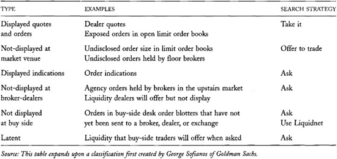
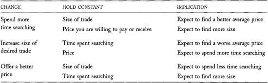
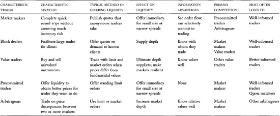

Chapter 19: Liquidity
Liquidity is the ability to trade large size quickly, at low cost, when you want to trade. It is the most important characteristic of well-functioning markets.
Everyone likes liquidity. Traders like liquidity because it allows them to implement their trading strategies cheaply. Exchanges like liquidity because it attracts traders to their markets. Regulators like liquidity because liquid markets are often less volatile than illiquid ones.
Market Frictions
Economists like liquid markets---securities markets, contract markets, product markets, and labor markets---because their models work better when they do not have to consider how transaction costs affect economic decisions. When confronted with transaction costs, people trade less often. If the costs are high enough, they do not trade at all.
Transaction costs in an economic system therefore are like frictions in a mechanical system. They both slow things down and can ultimately stop all activity. Economists therefore call transaction costs market frictions.
Everyone in the markets has some affect on liquidity. Impatient traders take liquidity. Dealers, limit order traders, and some speculators offer liquidity. Brokers and exchanges organize liquidity.
Given its importance, you would expect that the term liquidity would be well defined and universally understood. In fact, liquidity means different things to different people. Traders and regulators talk about it all the time, but rarely are they clear about what they mean. Consequently, they often fail to communicate effectively about liquidity.
The confusion is due to the many dimensions of liquidity. When people think about liquidity, they may think about trading quickly, about trading large size, or about trading at low cost. Some dimensions of liquidity are more important to some people than to others. Unfortunately, people rarely distinguish among these dimensions when discussing liquidity.
In this chapter, you will see that liquidity---the ability to trade---is the object of a bilateral search in which buyers look for sellers and sellers look for buyers. The various liquidity dimensions are related to each other through the mechanics of this bilateral search. Traders must understand these relations in order to trade effectively.
Understanding liquidity is one of the primary objectives of this book. In this chapter, we will carefully define liquidity and its various dimensions. We then will identify the types of traders who supply liquidity and discuss how they compete with each other.
The Most Important Bilateral Search
For many people, finding a life partner is the most important bilateral search problem that they encounter. For others, it is finding a job. Although this book is not about how people form life relationships or obtain jobs, all bilateral search problems have similar structures. What you learn about how people trade securities and contracts may help you understand how people find partners and jobs.
These discussions will be especially useful to you if you are a trader who needs to know where to look for liquidity. They also will be useful to you if you intend to offer liquidity. In that case, you must understand with whom you will compete so that you can predict when you can expect to be successful.
You also need to understand liquidity to measure it effectively. Many traders and regulators regularly measure liquidity. Traders measure liquidity to determine whether their trading strategies are sensible, given the available liquidity. They also measure liquidity to evaluate the service they obtain from their brokers. Brokers likewise measure liquidity to evaluate the service they obtain from their dealers. Regulators measure liquidity to determine which market structures are best. No one can answer these questions, however, without clearly understanding what they are measuring. As a rule, you cannot measure something that you cannot define. The concepts presented in this chapter provide a basis for the measurement methods presented in chapter 21.
A Unilateral Search for a 35mm Camera
Fred wants to buy a specific camera model at a low price. His time is worth 30 dollars an hour.
Fred goes onto the Internet to search for the best price among mail-order photography stores that offer the camera. After five minutes of searching at A1ePhoto's site, he discovers that they will sell the camera for 112 dollars. After another five minutes, he discovers that BNDPicture will sell it for 109 dollars. He decides to search again. Six minutes later, he finds that CDBirD will sell it for 119 dollars. No bargain there.
Should Fred search more? He estimates that if he finds a lower price, it would be no lower than 99 dollars (i.e., no more than 10 dollars less than his current best price). He also estimates that the probability that he will find a price that low at less than 0.25. Fred's expected gain from searching again therefore is less than 2.50 dollars (10 X 0.25). Since it appears that each search takes at least five minutes, his expected cost of searching again is more than 2.50 dollars, given the 30-dollar value he places on an hour of his time. Since the expected cost is greater than the expected gain, Fred decides to stop searching. He buys the camera from BNDPicture for 109 dollars.
The Economics of Divorce
Some people divorce because they learn that they have arranged a poor match. They either learn that their relationship did not develop as they expected, or that their opportunities to form other relationships were better than they expected.
Other people divorce because they are not mature enough to accept that even when they search optimally, they generally will not arrange a perfect match. When they later see other matches that they believe would have been better for them, they forget that they stopped searching because it was too costly. They also forget that the search for a spouse is a bilateral search. In particular, they forget that they cannot arrange every match that they might want to arrange.
In either event, people who initiate divorce presumably believe that the benefits from searching again, or from being single, are greater than the substantial emotional, social, and financial costs of not breaking their matches. Unfortunately, many subsequently learn that their expectations were poorly founded.
19.1 THE SEARCH FOR LIQUIDITY
Liquidity is the object of bilateral search. In a bilateral search, buyers search for sellers, and sellers search for buyers. When a buyer finds a seller who will trade at mutually acceptable terms, the buyer has found liquidity. Like-wise, when a seller finds a buyer who will trade at mutually acceptable terms, the seller has found liquidity. To understand trading, you must understand the strategies that traders use to conduct these bilateral searches.
Bilateral searches are similar to---but more complicated than---unilateral searches. You will find bilateral search strategies easier to understand if you first understand unilateral search strategies.
19.1.1 Unilateral Searches
In a unilateral search, you actively search for a good match---a good price, for example. The main decision that you must make is when to stop the search. The general rule is to continue searching as long as the expected benefit from an additional inquiry is greater than the expected cost of the inquiry. The expected benefit depends on the probability that you will find a better match than you have already found. As the search proceeds, this probability declines as you find progressively better matches. The expected benefit also depends on how much better unfound matches might be than the best match you have already found. As the search proceeds, the possible improvement declines as you find progressively better matches. At some point, your expected benefit from an additional inquiry becomes less than the cost of the inquiry. You then stop the search and pick the best match that you have found.
If searching is expensive, you will often stop before you have found the best possible match. You may later discover that you could have arranged a better match had you known more about the alternatives. An optimal search produces the best possible result only if you are lucky enough to find it.
Exchanges Are Search Engines
A search engine is a system that collects information in which people may be interested. It allows people to search through that information at a low cost.
In the previous example, had Fred been able to use a search engine to locate the best price for his camera, he might have discovered that GR8 Film and Photo is offering the camera for 87 dollars. Search engines make markets more competitive by lowering the costs of searching.
Exchanges and electronic quotation services collect information about who wants to trade. They then organize it so that traders can easily find the best trading opportunities. They are search engines that allow buyers to cheaply find sellers who are offering the lowest prices and sellers to cheaply find buyers who are bidding the highest prices.
Librarians Are Information Brokers
Librarians help researchers solve unilateral search problems. Their training and experience help them make good decisions about where to look first for the information that their clients seek.
If you knew ahead of time where to find the best possible match, you would of course go there first. In that case, the costs of searching would be very low because you already know the outcome. In general, you will get a better outcome when your costs of searching are low.
Whether your search produces a good outcome or not depends to some extent on luck and to some extent on your skill as a searcher. Good searchers know the best places to look for what they want, and they look there first. A good trader knows where to look first for liquidity.
19.1.2 Bilateral Searches
Bilateral searches differ in two respects from unilateral searches. First, you may search either actively or passively. Active searchers try to find matches. Passive searchers wait for others to find them. Second, whatever your search strategy, you may not always be able to return to the best match that you identified during the course of your search. While you continue your search, so does the other side. When you decide that you want to return to your best match, you may discover that it is no longer available. These differences make bilateral search strategies significantly more complicated than unilateral search strategies.
The stopping rule for an active bilateral search is the same as for a unilateral search: You should stop when the expected benefit from an additional search is less than the expected cost of an additional search. Now, however, the cost of continuing to search must include the potential loss of your previous best match. This additional cost suggests that you will try to stop searching sooner when engaged in an active bilateral search than in an otherwise identical unilateral search. Your search may not end sooner, however: Your best match may no longer be available when you want to stop searching. In that case, you will have to continue your search.
The search strategies that traders employ to find liquidity vary by their trading objective. Impatient traders generally search actively. Patient traders usually are passive searchers. They wait for impatient traders to find them. Since impatient traders initiate trades, we say that they demand liquidity. Patient traders supply liquidity.
Passive traders often display their interest in trading to make it easier for active traders to find them. They offer limit orders, quote markets, post indications on bulletin boards, or simply advise their brokers. Passive traders who most widely display their interests typically trade before those who do not.
Sometimes You Can't Go Back
Although John probably will not admit it, he has been looking for a wife for the last 10 years. As he sees his friends getting married, he realizes that he must get serious about his search. John fondly remembers that Ruth, a woman he dated seven years ago, would make an especially good match. Not surprisingly, she is no longer available. Although she liked John, she later met and married Boaz.
Even if Ruth were still available, she might not have welcomed John's renewed interest. How people value a match often depends upon how they conduct their searches. Ruth may never be able to trust John again because he once lost interest in her.
Order Exposure in the Marriage Market
Many people are unwilling to expose that they are looking for a spouse for fear of appearing needy. Rightly or wrongly, people may make inferences about your position from how you search.
Matchmakers are marriage brokers who help solve this problem by confidentially proposing matches among people who indicate that they are interested in getting married. Matchmakers must know their clients well to propose successful matches.
In many markets, passive traders commit to trade at prices that they post. These commitments increase the probability that an active trader will call upon them. Active traders prefer to call upon such traders because they are confident that they can arrange trades with them and thereby reduce their overall search costs.
Problems that large traders encounter when they expose their orders often complicate their liquidity search strategies. Large traders generally do not like to show that they want to trade because they fear that front runners will trade ahead of them or that liquidity suppliers will retreat from before them. Large traders therefore either actively search for liquidity among traders who post firm quotes or become passive searchers who do not display their trading interests. Such passive traders have latent trading demands that active searchers must discover. Table 19-1 provides a summary of the different types of displayed and undisclosed liquidity.
TABLE 19-1.\ Types of Displayed and Undisclosed Liquidity

Brokers often help traders solve their search problems. Brokers search more efficiently than their clients do because they know more about who would want to trade. Large traders use brokers to arrange their trades to avoid displaying their orders to other traders.
Dance Strategies
In many respects, the search for liquidity is similar to how teenagers find partners at a dance. Dancers employ three strategies to arrange their dances. Those most interested in dancing ask potential partners whether they would like to dance.
Other dancers stand on the side of the dance floor, tapping their feet and bouncing up and down to indicate that they are interested in dancing. These dancers display their interest, but they wait passively until others ask them to dance. They would have a greater chance of dancing if they were willing to commit to dancing if asked. Most, however, want to judge the partner before accepting the invitation.
Wallflowers use the last strategy. They lean against the wall, seemingly ignoring the dance floor. They may want to dance, but they will not ask to dance and/or display their interest. They may dance when asked, but only if they like the match.
The costs of finding liquidity vary substantially across instruments and often through time for a given instrument. Liquidity is easiest to find when many people on both sides of the market are looking for it at the same time. Widely held instruments therefore usually trade in very liquid markets. Instruments that are in the news and therefore are the subject of widespread interest also tend to trade in very liquid markets. Liquidity tends to dry up when people are paying attention to other things. For example, trading large size can be very difficult near holidays, when many traders are not working.
19.2 LIQUIDITY DIMENSIONS
Searches are productive processes in which searchers use inputs to produce outputs. In the search for liquidity, the primary input is the time spent searching. The main outputs are good prices and adequate sizes.
We can characterize the expected outcome of a search problem as a production function that explains how the inputs to the search are related to the expected products of the search. This characterization of the search problem allows us to easily recognize trade-offs among various dimensions of liquidity. In particular, when traders are willing to search longer, they can generally expect to find more size at a given price, or a better price for a given size. Likewise, when traders want to trade more size, they can expect to obtain a worse price or spend more time searching. Finally, when traders offer better prices to other traders, they can expect to find greater size or spend less time searching. Table 19-2 summarizes these trade-offs.
These inputs and outputs of the bilateral search process correspond to the following three dimensions of liquidity to which traders commonly refer:
• Immediacy refers to how quickly trades of a given size can be arranged at a given cost. Traders generally use market orders to demand immediate trades.
• Width refers to the cost of doing a trade of a given size. For small trades, traders usually identify width with the bid/ask spread. It also includes brokerage commissions. Width is the cost per unit of liquidity. Traders often refer to market width by the term market breadth.
• Depth refers to the size of a trade that can be arranged at a given cost. Depth is measured in units available at a given price of liquidity.
TABLE 19-2.\ Liquidity Trade-offs

Breadth and depth are closely related. Mathematicians say that they are duals to each other. Traders who want to minimize the cost of trading a given size solve a problem that is essentially identical to that of traders who want to maximize the size they trade at a given cost. The strategies that best solve both problems are the same. In both cases, traders must search efficiently. Depth---the size that you can trade at a given price---and breadth---the price at which you can trade a given size---therefore summarize essentially the same information about liquidity conditions.
These three dimensions of liquidity help us understand why traders are often confused about the nature of liquidity. Impatient traders focus primarily on immediacy and its cost, which for small trades is represented by width. Large traders focus on depth. Different traders focus on different aspects of the search problem.
To summarize, liquidity is the ability to quickly trade large size at low cost. "Quickly" refers to immediacy; "size," to depth; and "cost," to width.
Since liquidity is the ability to trade, we can characterize liquidity as a function that tells us the probability of trading a given size at a given price, given the time we are willing to put into our search. This characterization allows us to consider many other factors besides size, price, and time that affect the probability of trading. Some of the more important factors involve the following issues:
• Why do you want to trade? Traders are far more willing to trade with uninformed traders than with well-informed traders. Liquidity thus is different for traders who are known to be uninformed than for those who are known as informed traders. Markets may be liquid for the former but not for the latter. In practice, traders often do not know who is well informed. Traders who can convince others that they are not well informed generally obtain better prices or more size.
• What is being traded? Instruments that interest large numbers of traders trade in much more liquid markets than do instruments that interest only a few traders.
• How well do traders know fundamental values? Instruments for which fundamental values are not well known tend to trade in illiquid markets because liquidity suppliers are afraid that they might trade with better-informed traders.
• When is the trade to be arranged? Trades are harder to arrange when markets are closed than when they are open. Markets are also less liquid when traders suspect that some traders have information that is not yet in the prices.
• What are other traders doing? It is easier to buy while prices are falling than when prices are rising.
• Is there an imbalance between displayed buying and selling orders? Imbalances often indicate that liquidity will be cheap for one side and expensive for the other side.
• Who is trading? All other things held constant, a good trader is more likely to complete a trade than is a poor trader. Good traders know how to display their interest, who wants to trade, and how to approach traders.
Traders, regulators, and academics often refer to a fourth dimension of liquidity called market resiliency. This dimension also is related to the bilateral search, but much less directly than are immediacy, width, and depth. Resiliency refers to how quickly prices revert to former levels after they change in response to large order flow imbalances initiated by uninformed traders. We will discuss it further below when we discuss the role that value traders play in offering liquidity.
19.3 THE WHO, HOW, AND WHY OF LIQUIDITY
We now will review who offers liquidity, why they offer liquidity, and the relation between their trading strategies and the various dimensions of liquidity. This review summarizes discussions about the various liquidity-supplying traders who appear in chapters 13-18. It provides an integrated view of all aspects of market liquidity.
19.3.1 Overview
Traders offer liquidity whenever they trade in response to orders that others initiate. Liquidity-offering traders may be market makers, block dealers, buy-side institutions, or individual investors. Market makers and block dealers offer liquidity when they fill marketable orders or do customer facilitations. Buy-side institutions and individual investors typically offer liquidity when they submit standing limit orders. They also offer liquidity when they use market orders to trade in response to requests for liquidity that others make. Order type therefore is not always the best indicator of whether a trader is offering liquidity or taking it. In general, traders offer liquidity when they want to exploit opportunities that liquidity-demanding traders create when they demand to trade.
Traders do not need to display their orders to offer liquidity. For example, a trader who submits an undisplayed order to an electronic trading system offers liquidity that traders can discover by submitting suitably priced orders. Likewise, a trader who will trade only if asked by a broker also offers liquidity. In both cases, these traders allow other people to trade, but they show their offers under very limited circumstances.
Traders offer liquidity because they hope to profit from selling at high prices and buying at low prices. Whether their trading is profitable or not depends on whether their orders execute, and on how prices change after their orders execute.
We can classify liquidity suppliers into two groups according to their primary motive for trading. Dealers and value traders trade primarily because they hope to profit. Dealers hope to profit from offering liquidity. Value traders hope to profit from speculating successfully on their information about fundamental values. These traders are passive liquidity suppliers because they generally will not trade unless impatient traders demand liquidity. Other traders offer liquidity only to lower the cost of trades that they already intend to make, but which they are in no hurry to complete. Such traders may want to trade to speculate, invest, hedge, exchange assets, or gamble. We will call these traders precommitted liquidity suppliers because they would demand liquidity if they did not offer it. Precommitted liquidity suppliers may eventually demand liquidity if their limit orders do not fill.
In the remainder of this section, we consider how market makers, block dealers, value traders, precommitted traders, and arbitrageurs contribute to market liquidity. Here, as before, we treat these traders as though they use only their single characteristic trading strategy. In practice, most traders use multiple trading strategies.
By focusing on characteristic strategies, we can analyze complex behaviors by breaking them down into simple components. If you are a trader, these analytic skills will help you to attribute your profits more accurately to the various strategies that you pursue. You therefore should be able to better identify when you have a comparative advantage.
19.3.2 Market Makers
Market makers are dealers who allow their impatient customers to trade at bid and ask prices that the market makers quote. Market makers often trade very frequently. They try to buy after they sell, and vice versa. They avoid large inventory positions because they generally do not know the fundamental values of the instruments that they trade very well. Large inventory positions expose them to losses if the market moves against them. Market makers simply try to discover the prices that produce balanced two-sided order flows.
Market makers primarily supply liquidity in the form of immediacy. They usually quote narrow markets, but only for small size. If asked to trade large size, they will quote wide markets to protect themselves from losses to well-informed traders.
Market makers are passive traders. They generally wait until their customers want to trade with them. They use their quotes to solicit trades that will help them reduce large inventory positions. If they are especially uncomfortable with their inventory positions, they may demand liquidity from other traders.
Market makers supply liquidity only when they are confident that they can recover from uninformed traders what they expect to lose to informed traders. They naturally try to avoid informed traders. Since they generally do not know their customers well, they occasionally trade with informed traders.
Market makers trade most effectively when they can identify whether they are trading with well-informed traders. They also have an advantage as order-anticipating speculators (see chapter 11) because they generally see more order flow than other traders.
Market makers need capital to finance their inventories. The capital available to them thus limits their ability to offer liquidity. Because market making is very risky, investors generally do not like to invest in market-making operations. Investors are less concerned about inventory risk---most of which is diversifiable---than about trader incentives. Financiers know that most people do not work as hard when working for others as when working for themselves. Since market making requires continuous attention in order to avoid significant losses, incentives are especially important. Market makers therefore often cannot easily raise capital by borrowing or by issuing equity.
Market-making firms that have significant external financing typically have excellent risk-management systems that prevent their dealers from generating large losses. These systems tightly limit the capital that each dealer can commit. Market-making firms also ensure that their traders' compensation contracts reward them for making profits and penalize them for generating losses. These contracts give traders equity-like positions and thereby align their interests with those of the firm's shareholders and bondholders.
Many exchanges and dealer networks require that their dealers meet minimum capital standards in an effort to make their markets more liquid. The strategy is not necessarily successful, however. Dealers who have more capital can offer more liquidity, but they may not choose to do so. Unless compelled to provide liquidity, dealers provide liquidity only to the extent that they feel comfortable. If they face too much adverse selection from informed traders, no amount of capital will make them willing to supply liquidity. Capital adequacy regulations therefore only ensure that dealers can offer liquidity if they desire to do so.
19.3.3 Block Dealers
Block dealers are traders who offer liquidity to clients who want to trade large positions. The positions may be large blocks of a single security or contract, or they may be portfolios of many instruments. Block dealers offer liquidity when they buy or sell the positions that their customers offer to them. Traders sometimes call these trades facilitations because the block dealers facilitate their customers' trading.
Since block dealers take large positions, they are especially concerned about trading with well-informed traders. To avoid this risk, they carefully consider with whom they trade. Block dealers usually know their clients well and facilitate trades only with clients they believe will not hurt them. Since block dealers need to study why their clients want to trade, they often do not trade quickly. They generally do not want to supply immediacy because impatient traders are often well informed.
Block dealers offer liquidity to their customers in the form of depth. By knowing their clients well, they can offer to trade much larger size than market makers will offer. They offer to trade only with clients they think are not well informed, however. Block dealers have no desire to facilitate trades for well-informed traders.
Block dealers need much capital to run their businesses. They must therefore have strong risk-management systems to ensure that traders do not take foolish positions. These systems tend to slow their trading. Since holding large blocks is quite risky, block dealers tend to work for large firms that can spread their inventory risks over many positions.
Block dealers have an advantage over market makers when offering liquidity to large traders because they know more about who wants to trade than do market makers. Market makers have an advantage over block dealers when offering liquidity to small traders because they can trade much quicker and because they know more about what prices will produce two-sided order flows over short intervals.
The best block dealers know how to trade out of their positions. Either they break them up and distribute them into the market, or they place them with other clients. Those who distribute their blocks must be excellent traders. Those who place their blocks must be excellent salesmen.
19.3.4 Value Traders
Value traders are informed traders who collect as much information about fundamental values as is economically sensible. They then use their information to form opinions about security and contract values. Value traders trade when prices differ substantially from their estimates of value.
Value traders typically trade only when they are supplying liquidity. To understand why they supply liquidity, consider the two scenarios under which prices may differ from fundamental values. In the first scenario, fundamental values differ from prices when fundamental values have changed but prices have not yet adjusted. Fundamental values change when events occur that change valuations. For example, the value of a factory will drop substantially if it burns down. Prices change to reflect changes in fundamental value when traders receive and digest news about events that change valuations. The traders who act on this information are news traders (see chapter 10) because, by definition, they trade on news that represents changes in the stock of information.
In the second scenario, fundamental values differ from prices when prices change but fundamental values have not. Prices often change when uninformed traders demand liquidity when trading. Such traders generally have an impact upon prices because dealers are unable to distinguish between informed and uninformed traders, because dealers require substantial rewards for taking large inventory positions, and because traders often require substantial price incentives to give up positions that they like or for which they have unrealized capital gains. Value traders exploit these opportunities when they buy underpriced instruments or sell overpriced instruments. When making these trades, value traders trade in response to the demands that other traders make for liquidity. Value traders therefore are liquidity suppliers.
Value traders are the ultimate suppliers of liquidity. When nobody else will trade, value traders will trade if the price is right. They supply liquidity in the form of depth. They are best able to supply depth because they are best able to solve the adverse selection problem. They solve it by knowing values better than anybody else does. They generally do not care with whom they trade as long as they are confident that they have all available fundamental information.
Value traders are usually slow traders. They must be very confident that they know everything relevant to estimating values. They therefore tend to trade after uninformed demands for liquidity have caused prices to change.
Value traders often compete with each other to supply liquidity. Frequently some event may cause many value traders to try to trade at the same time. In that case, the quickest value traders will be the most profitable because they will incur the lowest transaction costs.
Value traders make markets resilient. Markets are resilient when trading by uninformed traders has little effect on prices, and when the effects of their trading on prices are very short-lived. Markets are resilient when value traders are well capitalized, well informed, and willing to trade. Value traders cause prices to return to fundamental values after liquidity demanders cause them to diverge.
The prices at which value traders will buy and sell constitute the outside spread. Outside spreads tend to be much wider than market maker spreads because value traders generally trade much larger sizes and because they must fund their research costs. Although value traders trade with better-informed traders less often than do market makers, value traders expose themselves to greater adverse selection risk because they trade much larger sizes that they often must hold for much longer periods. Value traders lose only to news traders who are better informed than they are about the latest news concerning fundamental values. They also lose to other value traders who estimate values more accurately than they do.
Market makers who acquire inventory positions with which they are especially uncomfortable often lay off those positions onto value traders. Such layoffs occur after market makers have bought inventory from uninformed traders while lowering prices. The low prices may attract value traders who buy the market makers' inventories. Layoffs also occur after market makers have sold inventory to uninformed traders while raising prices. In that case, the high prices attract value traders who sell inventory to the market makers.
19.3.5 Precommitted Traders
Precommitted traders offer liquidity to obtain better prices for trades that they would like to complete. These traders typically offer limit orders in an attempt to buy at the bid or sell at the ask. They are successful only if their orders trade. If the market moves away from their orders, they may lose the opportunity to make a favorable trade, or they may ultimately make the trade at much worse prices. To avoid this risk, precommitted traders place their orders close to the market. (If they were especially afraid of not trading, these traders would demand liquidity with market orders.) Precommitted traders therefore are often the most aggressive suppliers of liquidity. Bid/ask spreads are small in public auction markets with many precommitted traders.
Precommitted traders can drive dealers out of a market because they can, and often do, price their orders more aggressively than dealers place their quotes. Dealers must quote spreads that allow them to recover their costs of doing business. Since precommitted traders do not face these costs, they can drive dealers out of business.
Dealers have an advantage over precommitted traders, however. Dealers generally can adjust their quotes faster than precommitted traders can adjust their limit orders. If they have limit order books, they also can decide whether they want to fill an incoming marketable order or allow it to fill with orders on their limit order books. Dealers naturally will make these decisions to their advantage. Limit order traders therefore often will find that they trade when they wish they had not, or that they did not trade when they wish they had.
Precommitted limit order traders supply liquidity in the form of immediacy. When they are especially aggressive, they may offer very narrow spreads. They typically do not offer significant depth, however, because large traders are reluctant to display their standing limit orders. Those who do display their large orders invite traders to employ quote-matching strategies against them.
19.3.6 Arbitrageurs
Arbitrageurs are traders who trade on price discrepancies between two or more markets. The effect of their trading is to connect demands for liquidity made in one market with offers of liquidity made in another market. Arbitrageurs therefore are not suppliers of liquidity but porters of liquidity. They demand liquidity in the market where it is most available and supply that liquidity in the market where traders demand it.
Since arbitrage is generally a low-risk strategy, arbitrageurs can move substantial liquidity from one market to another. Arbitrageurs increase the depth in a market by bringing in more liquidity from other markets when traders demand it.
Arbitrageurs are essentially market makers who connect buyers in one market with sellers in another market at same time. In contrast, dealers are market makers who connect buyers in one market to sellers in the same market who arrive at different times. Thus, arbitrageurs and dealers compete with each other.
19.3.7 Summary
To some extent, all liquidity suppliers compete with each other. Each type, however, specializes in a niche to which it is best suited to offer liquidity. Their advantages generally depend on their information about fundamental values or other traders.
• Market makers have little information about fundamental values or their clients. They specialize in offering immediacy to small traders.
• Block dealers know a lot about their clients. They offer depth to uninformed clients.
• Value traders know more than everyone else does about fundamental values. They generally do not care much about with whom they trade. Their confidence in fundamental values allows them to be the ultimate suppliers of depth.
• Precommitted traders trade for reasons other than to supply liquidity. Since they already intend to trade, they do not care much about with whom they trade. They typically supply immediacy.
• Arbitrageurs are well informed about relative instrument values. When their arbitrages involve very low risk, they ensure that traders can access the depth in any market that trades the instruments that interest them.
Table 19-3 presents a summary of the traders who offer liquidity.
19.4 AN ILLUSTRATIVE EXAMPLE
This section presents an example that illustrates many of the principles discussed in the previous section. Although the example is fictitious, the scenario described regularly occurs in many markets.
Suppose that an impatient uninformed trader wants to sell a large block of XYZ stock on the floor of the New York Stock Exchange. The trader is demanding more liquidity than traders can easily find there. He therefore will have a substantial effect on XYZ's stock price.
Although we assume that the trader is uninformed, the trader probably thinks that he is a well-informed trader who is trying to profit from material information that will soon become public. Otherwise, he would have been foolish to demand so much liquidity on the floor. If he knew that he was not well informed, and if he still wanted to do the trade, he should have traded using a less aggressive order submission strategy.
The trader sends his order to Florence, his floor broker on the floor of Exchange. When the order arrives, the XYZ NYSE specialist is quoting a tight market of 40 bid, offered at 40.05 for small size. The specialist's quote offers immediacy in a tight market for small size.
When Florence presents the order at the specialist's post, the specialist is the only trader standing there. Florence tells him that she has a large order to sell XYZ and asks for his assistance to fill it. The specialist asks about the order, and Florence tells him that she knows only that her client wants it filled quickly. Under the circumstances, both the specialist and Florence assume that the client is well informed.
TABLE 19-3.\ Liquidity Suppliers

The specialist shows Florence that there is insufficient size in the book to fill the order. The specialist then tells her about some other floor brokers he suspects have clients who are interested in XYZ. They then page those traders. When they arrive at the post, Florence determines the extent of their interest. Some of the floor traders hold working orders issued by their clients. Others contact their clients to obtain instructions. Some of these clients express interest when presented with the trading opportunity. Given the information that the floor brokers collect and reveal, it becomes apparent that the price will have to drop to 37 dollars to fill the order. Florence agrees, and the specialist arranges the following trades.
The specialist first matches the large order with orders from traders on the book at prices between 37 and 40. These traders include some precommitted traders and some value traders. They supply immediacy directly to the large trader, but they do not offer much size. The specialist matches them all at 37 dollars.
The floor brokers then arrange to fill some of the order for their clients at 37 dollars. Since the specialist brought these traders together, he acts as a broker for these trades. He will not collect a commission for his efforts, however. Brokering such trades is a responsibility of his position and a favor he does to please floor brokers. In any event, all he did was tell Florence about brokers who had previously inquired about the stock. The floor brokers' clients supply substantial depth to the large trader, but it comes at substantial cost.
Finally, the specialist buys the remainder of the order for his own account at 37 dollars. The specialist offers depth, but only at substantial cost.
The specialist now holds significantly more of XYZ stock than he wants to hold. To sell inventory and to avoid buying more, he lowers the market quote to 37 bid for moderate size, 37.30 offered for moderate size. The specialist bids for moderate rather than small size because he does not want other traders to suspect that the buy side of the book is empty. If traders suspect that they can drive the price down, they may try to do so, which could seriously hurt the specialist with his large long inventory position. The specialist hopes that the substantially lower prices will attract more buyers than sellers.
The specialist is using his quotes to solicit liquidity for his own account. There are no orders on the book on the buy side and none on the book on the sell side below 40 dollars.
Very soon afterward, an arbitrageur in the options markets sends a market order to buy moderate size through the SuperDot order-routing system. The specialist fills the arbitrageur's order from his own inventory at 37.30. At the same time in the options market, the arbitrageur sells XYZ calls and buys an equal number of XYZ puts struck at the same price and expiring on the same date. (This combination of long puts and short calls produces a short synthetic stock position that has essentially the same risk characteristics as a short stock position. The arbitrageur thus buys and sells positions that are essentially the same.)
Although the arbitrageur demands immediacy from the specialist, she also supplies depth to the specialist, and therefore indirectly to the large trader. The arbitrageur uses a market order because she wants to trade quickly so that she can synchronize her stock and options trades. She synchronizes her trades to reduce the risk in her arbitrage.
The buyers of the calls and the sellers of the puts also indirectly supply liquidity to the large uninformed trader through the intermediation of the arbitrageur and the specialist.
Hours, or perhaps days, later a value trader uses a market order to buy moderate size from the specialist at 38.25 when the stock is quoted for 38.10 bid, 38.25 asked. The value trader supplies liquidity (depth) directly to the specialist and indirectly to the large uninformed trader. The value trader uses a market order to demand immediacy, perhaps because other tasks compete for his time. The value traders help restore prices to their former levels. They make markets resilient.
Days, or perhaps weeks, later, the specialist is again quoting prices near 40 and his inventory is near its target level.
In this example, the large trader lost money because he traded too aggressively. His aggressive trading fooled the market into thinking that he was well informed. When traders concluded otherwise, prices rose. Depending on what he did with the money, he probably would have been better off had he not traded. He certainly would have been better off had he been able to convince other traders that he was uninformed.
19.5 SUMMARY
Liquidity is often discussed but rarely well understood. The confusion has its origins in the complexity of the bilateral search problem, in which buyers search for sellers and sellers search for buyers.
Liquidity is the object of this bilateral search. It is the ability to trade large size quickly at low transaction cost. This simple definition reflects the complexity of the concept. Liquidity has size, time, and cost dimensions. Traders generally refer to these respective dimensions as depth, immediacy, and width.
Impatient small traders easily solve the bilateral search problem because they typically trade at exchanges and in dealer networks that assemble information about who wants to trade and the prices at which they will trade. These trading systems act as search engines. To increase the probability that liquidity-demanding traders will trade with them, most liquidity suppliers in these systems provide firm quotes and orders. Small liquidity-demanding traders therefore need to search only for the best price. Order-driven trading systems that use price priority rules in their matching systems provide this service automatically.
Patient small traders offer limit orders, hoping that someone will find them. This trading strategy is more complex than simple market order strategies because their orders may not fill. When they do fill, however, they typically get better prices than do market order traders.
For large traders, the bilateral search problem is more complex. Many large traders are reluctant to expose their orders. Markets for large size therefore are not very transparent. Search costs can be high, and search strategies may greatly affect the ultimate execution prices.
Five types of traders offer liquidity. Market makers offer immediacy at narrow spreads to small anonymous traders. Block dealers offer depth to large uninformed traders. Value traders offer depth to all traders. Precommitted traders offer immediacy at very narrow spreads in an effort to lower the costs of trades that they already intend to do. Arbitrageurs move liquidity from one market to another market and thereby ensure that traders can find depth wherever they trade.
19.6 SOME POINTS TO REMEMBER
• Liquidity is the object of a bilateral search problem.
• Liquidity is the ability to trade when you want to trade, at low cost.
• Brokers and exchanges organize liquidity that traders offer.
• Liquidity has several related dimensions.
• Market makers primarily supply immediacy.
• Upstairs traders primarily supply depth.
• Value traders make markets resilient.
19.7 QUESTIONS FOR THOUGHT
• How do the classified ads in a newspaper help traders search for each other?
• How does eBay help traders find each other?
• What are the advantages and disadvantages of open limit order books? Should exchanges have open limit order books?
• Can traders spend too much time looking for liquidity?
• Can a buyer and a seller find each other if neither is willing to display his interest?
• If the cost of searching drops, will merchants charge lower prices on average? Does your answer depend on whether merchants can cultivate reputations for low prices?
• Do market orders always demand liquidity?
• In the example of section 19.4, why did the large trader not trade directly with the value trader?
• Does the fact that securities are fungible make the bilateral search for liquidity qualitatively different from bilateral searchers for life partners or for dance partners?
• If you were a market regulator, how could you make markets more liquid?
• Which dimension of liquidity do you believe is the most important? Which dimension is most important to large traders? Which dimension is most important to small traders? Which dimension should regulators most care about?